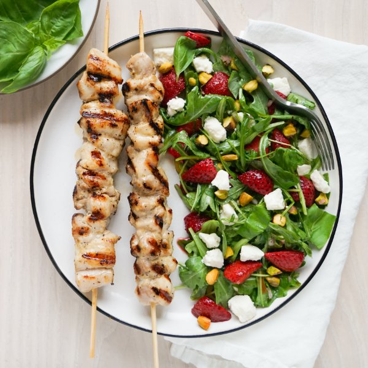

Chicken Skewers with Roasted Strawberry, Arugula, Basil & Feta Salad

Total Time
40 min
Nutrition (Per Serving)
670.9 kcalCalories
54.4 gProtein
23 gCarbs
41.1 gFat
Full nutrition table
| Calories | 670.9 kcal |
| Total fat | 41.1 g |
| Saturated fat | 10.4 g |
| Trans fat | 0.4 g |
| Cholesterol | 247.5 mg |
| Sodium | 519.6 mg |
| Carbohydrates | 23 g |
| Fiber | 5 g |
| Sugars | 13 g |
| Protein | 54.4 g |
| Potassium | 945 mg |
| Calcium | 268.3 mg |
| Iron | 4.2 mg |
| Vitamin A | 245.5 IU |
| Vitamin C | 84.1 mg |
| Vitamin D | 8.6 IU |
Cookware
Ingredients
- 1 (5 oz) pkgbaby arugula
- 2 lbchicken thighs, boneless skinless
- 1 (4 oz) pkgcrumbled feta cheese
- 1 small pkgfresh basil
- 2lemons
- ½ cuppistachios, unsalted
- 1shallot
- 1 (16 oz) pkgstrawberries
- black pepper
- extra virgin olive oil
- garlic powder
- honey
- mayonnaise
- salt
Steps
- Preheat oven to 375°F.
- If using wooden skewers, place 8-12 skewers in a shallow dish of water to soak until you are ready to use them.
- Wash and dry the fresh produce. (Skip the arugula if it came pre-washed.)1 (16 oz) pkg strawberries
2 lemons
1 small pkg fresh basil
1 (5 oz) pkg baby arugula - Trim and quarter strawberries lengthwise. Transfer to a baking dish, drizzle with honey, and season with salt. Stir to coat and spread out in an even layer.2 tsp honey
⅛ tsp salt - Place baking dish in the oven (it doesn't have to be fully heated) and roast, stirring halfway through, until strawberries are soft, about 25 minutes. Remove from oven and set aside to cool.
- Meanwhile, zest lemons into a medium bowl (reserve lemons for later use). Add mayo and spices to the bowl, then whisk to combine the marinade.¼ cup mayonnaise
1 tsp garlic powder
½ tsp salt
½ tsp black pepper - Pat the chicken dry with paper towels and cut into bite-sized pieces. Add to the bowl with the marinade and stir to coat.2 lb chicken thighs, boneless skinless
- Thread chicken onto skewers and place on a plate. (Alternatively, you can cook the chicken pieces directly on the grill pan without using skewers.)
- Preheat a grill pan, outdoor grill, or regular skillet over medium-high heat.
- Once the pan is hot, working in batches if necessary, add the skewers and grill, turning occasionally, until chicken is cooked through, 8-10 minutes. Remove to a clean plate.
- Meanwhile, using a clean cutting board, peel and mince shallot. Place in a clean medium bowl.1 shallot
- Juice one lemon into the bowl with the shallot. Add oil, pepper, and salt, then whisk to combine the dressing. (Reserve remaining lemon for serving.)2 tbsp extra virgin olive oil
½ tsp black pepper
¼ tsp salt - Pick basil leaves off the stems and roughly chop the leaves. Add to the bowl with the dressing.
- Roughly chop pistachios. Add to the bowl along with arugula, cooled strawberries, and feta. Gently toss to combine the salad.½ cup pistachios, unsalted
1 (4 oz) pkg crumbled feta cheese - To serve, divide skewers and salad between plates. Squeeze reserved lemon over the skewers and enjoy!